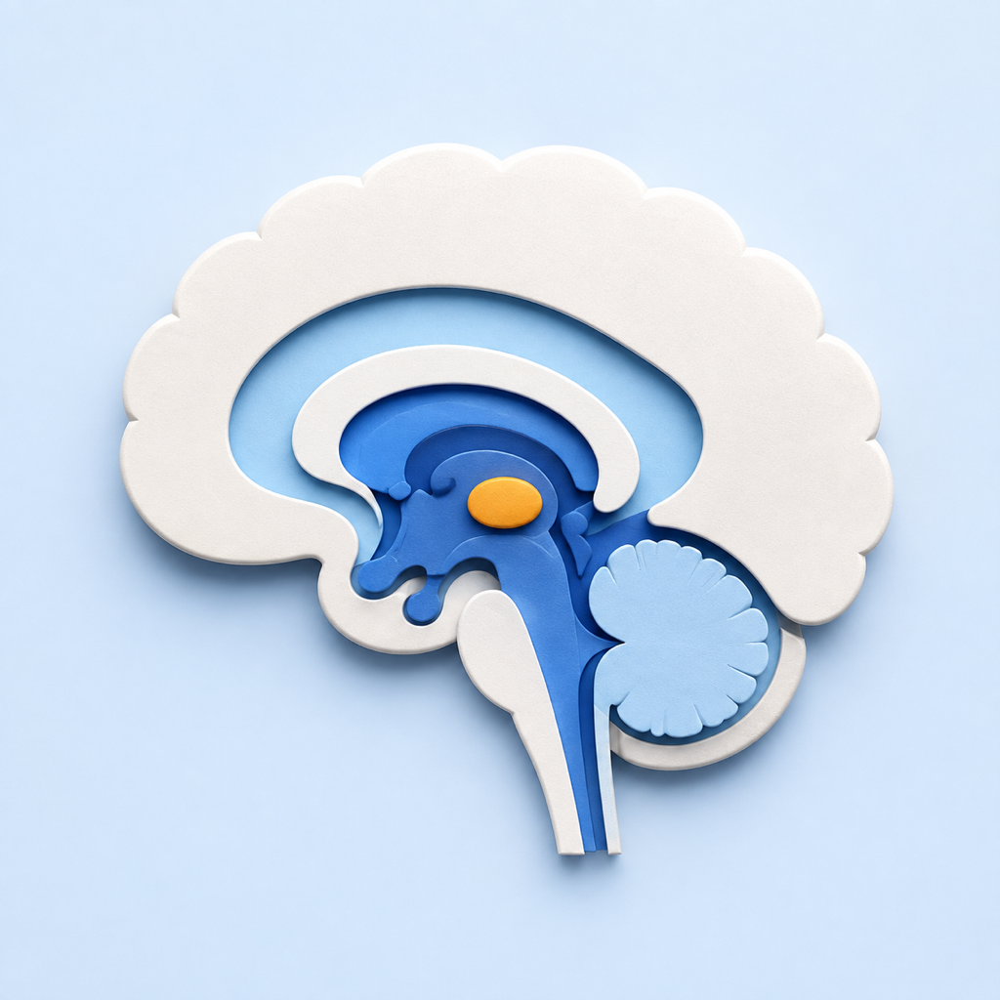

HumanBrain
Privacy Policy / 隐私政策
Your privacy in HumanBrain
This policy applies to HumanBrain for iPad, developed by Diyuan Wang. The app is an offline anatomy learning tool.
Data collected by the app
HumanBrain does not collect, upload, or transmit personal information, search queries, viewing activity, or device identifiers to the developer. It has no accounts, advertising, analytics SDKs, tracking technologies, or developer-operated backend.
Model resources and anatomical text are bundled with the app. Search, selection, camera movement, and display controls are processed on your device. The app does not access your contacts, location, camera, microphone, photos, or health records.
External links and this website
Reference, support, and privacy links open external websites in your system browser when you choose to use them. Those websites handle requests under their own privacy policies. HumanBrain does not append search history, selected regions, or personal identifiers to those links.
This website is hosted on GitHub Pages. GitHub logs visitor IP addresses for security purposes. See GitHub Pages data collection and the GitHub Privacy Statement. These HumanBrain pages do not add analytics scripts, advertising, or cookies.
Support correspondence
If you email support, the developer receives the email address, message, and any attachments you choose to send. That information is used to respond to your request and troubleshoot reported issues, is not sold or used for advertising, and is retained only as long as needed for support or applicable obligations. Email providers process correspondence to deliver and store it.
Retention, deletion, and choices
Because the app does not collect data, the developer has no app usage profile to retain, share, or delete. Uninstalling the app removes its local app container subject to iPadOS backup behavior. You may request deletion of support correspondence by emailing the address below.
Children and changes
The app does not knowingly collect personal information from children or other users. If the app's data practices change, this page and the App Store privacy information will be updated.
Contact
Diyuan Wang · wdyrix@gmail.com
HumanBrain 如何保护隐私
本政策适用于王迪远开发的 iPad 应用 HumanBrain。本 App 是离线解剖学习工具。
App 收集的数据
HumanBrain 不向开发者收集、上传或传输个人信息、搜索词、浏览行为或设备标识。App 无账号、广告、分析 SDK、跟踪技术或开发者运营的后端服务。
模型和解剖文字随 App 提供；搜索、选区、观察角度与显示控制均在设备上处理。App 不访问通讯录、位置、相机、麦克风、照片或健康记录。
外部链接与本网站
当你主动打开文献、技术支持或隐私政策链接时，系统浏览器会访问相应网站，由该网站依照自身隐私政策处理请求。HumanBrain 不在链接中附加搜索历史、已选脑区或个人标识。
本网站托管于 GitHub Pages。GitHub 会出于安全目的记录访问者 IP 地址，详见 GitHub Pages 数据收集说明和 GitHub 隐私声明。HumanBrain 的这两张页面未添加分析脚本、广告或 Cookie。
技术支持邮件
你发送支持邮件时，开发者会收到你主动提供的邮箱地址、正文和附件，仅用于回复问题及排查故障，不出售或用于广告，并仅在处理支持请求或履行适用义务所需期间保留。邮件服务提供商会为投递和保存邮件处理这些通信。
保留、删除与选择
App 不收集数据，因此开发者没有需要保留、共享或删除的 App 使用档案。卸载 App 会移除设备上的应用容器，系统备份依 iPadOS 行为处理。如需删除支持往来邮件，可联系下方邮箱。
儿童与政策更新
App 不主动收集儿童或其他用户的个人信息。如果数据处理方式改变，我们会更新本页及 App Store 隐私信息。
联系我们
王迪远 · wdyrix@gmail.com